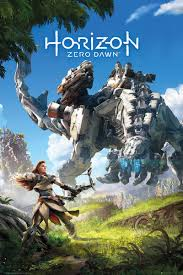
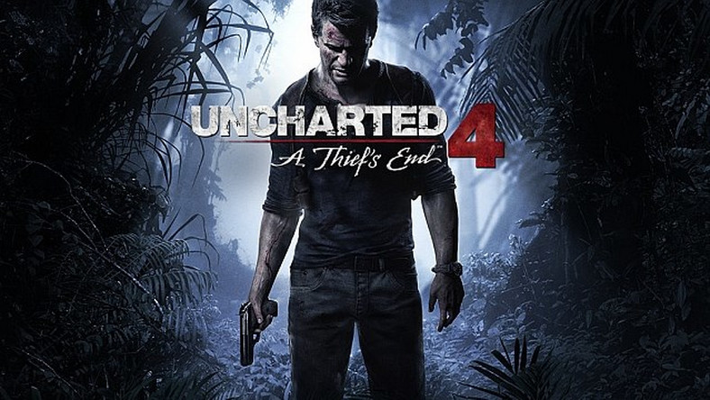

Horizon Zero Dawn
Horizon Zero Dawn – fabularna gra akcji przedstawiona z perspektywy trzeciej osoby, wyprodukowana przez studio Guerrilla Games. Gra została wydana przez Sony Interactive Entertainment 28 lutego 2017 wyłącznie na konsolę PlayStation 4. Główną bohaterką gry jest Aloy, wojowniczka plemienia Nora, która żyje w postapokaliptycznym świecie, przejętym przez mechaniczne zwierzęta. Protagonistka wyrusza na misję w celu poznania tajemnicy pochodzenia maszyn i swojego przeznaczenia.
Plusy | Minusy |
| - Przepiękna i szalenie szczegółowa oprawa graficzna; | - Słaby początek gry; |
| - Płynna i przyjemna mechanika walki oraz duży nacisk na skradanie się; | - Kiepskie dialogi i drewniana mimika, przez co postacie wyglądają jak manekiny; |
| - Im dłużej się gra, tym bardziej urzeka; | - Mało inteligentni przeciwnicy; |
| - Nienachalna i idealnie pasująca muzyka; | - Drobne błędy. |
| - Całkiem interesująca, pomimo pewnej przewidywalności, fabuła. |
Więcej informacji znajdziesz na tych stronach
Uncharted 4: Kres złodzieja
Uncharted 4: Kres złodzieja – przygodowa gra akcji przedstawiona z perspektywy trzeciej osoby, wyprodukowana przez studio Naughty Dog. Gra została wydana przez Sony Computer Entertainment 10 maja 2016 roku wyłącznie na konsolę PlayStation 4. Jest to czwarta część serii Uncharted. Uncharted 4 używa autorskiego silnika Naughty Dog Game Engine. Akcja gry rozgrywa się trzy lata po wydarzeniach z trzeciej części – Uncharted 3: Oszustwo Drake’a. Nathan Drake tym razem wyrusza na Madagaskar w poszukiwaniu legendarnego miasta Libertalia będącego anarchistyczną, antykapitalistyczną XVII-wieczną kolonią piratów, opisaną między innymi w książce Historia najsłynniejszych piratów, której autorstwo przypisuje się Danielowi Defoe.
Plusy | Minusy |
| - Fenomenalny projekt lokacji; | - Inteligencja przeciwników pozostawia sporo do życzenia; |
| - Satysfakcjonująca fabuła, bohaterowie, których nie sposób nie polubić; | - Dziwne zachowanie sojuszników podczas skradania się. |
| - Świetna mechanika strzelania; | |
| - Prymitywne, ale jednak obecne skradanie się; | |
| - Miłe urozmaicenie w postaci otwartych etapów; | |
| - Znacznie więcej swobody w starciach; | |
| - Świetna oprawa audiowizualna, kapitalne animacje; | |
| - Okrutnie trudna na ostatnim poziomie trudności. |